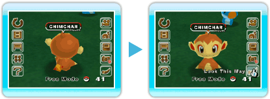

Puedes tomar una foto de la granja. Apunta a Take Picture
(tomar una foto) en el menú principal y oprime  , o simplemente oprime o
, o simplemente oprime o  . Puedes
guardar hasta 20 fotos en el Album (álbum). Cuando ya tengas 20
fotos en el Album (álbum) y tomas una más, se borrará
automáticamente la foto más antigua.
. Puedes
guardar hasta 20 fotos en el Album (álbum). Cuando ya tengas 20
fotos en el Album (álbum) y tomas una más, se borrará
automáticamente la foto más antigua.
Nota: El nombre del Pokémon, número de Pokémon, fecha y hora etc.,
que aparecen en pantalla no saldrán en la foto, pero sí la fecha de
captura, información del lugar etc., que se ven durante el desfile.
Look This Way (¡sonríe!)
Apunta a Look This Way (¡sonríe!) y oprime o simplemente oprime . Los
Pokémon y Miis te mirarán. ¡Prueba esta función para tomar una foto!
